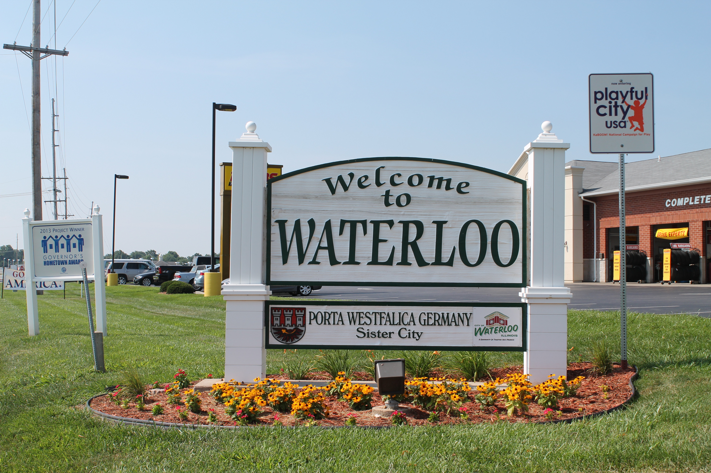
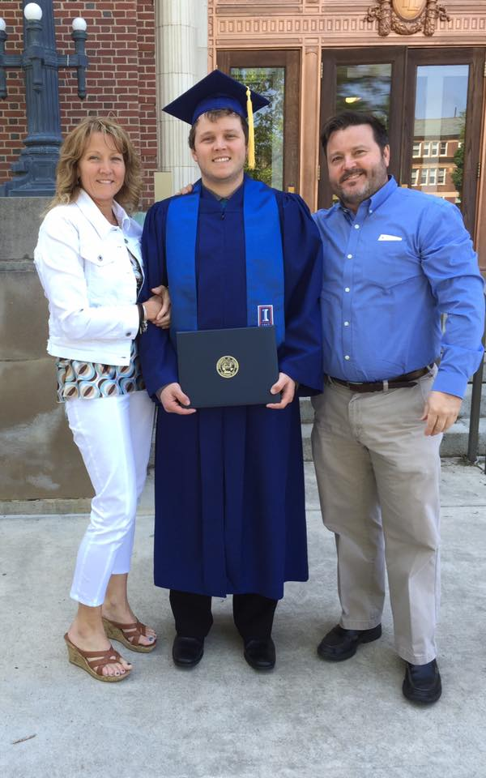

Early Life
I was born January 11, 1991 in Alton, Illinois. My family spent the first 9 years of my life in East Alton, Illinois before moving to Waterloo, Illinois in October of 2000. Most of my 'childhood' friends are from Waterloo, but I still have grandparents and family that live in Alton that I visit frequently. Waterloo is a great place to raise a family and be a kid. Most of my childhood consisted of playing with kids around my neighborhood and playing sports such as hockey, soccer, and baseball. Going through high school in Waterloo, I was on the school soccer team and hockey team. Some of my closest friends to this day are ones I met in middle school and high school in Waterloo.
College Life in Champaign, IL
I was accepted to the University of Illinois at Urbana-Champaign out of high school and majored in Architecture for the first two years of my undergraduate studies. Eventually, it became clear to me that architecture was not my passion. Not sure what major to transfer to, a friend got me a job at the Illinois Natural Survey's Medical Entomology lab. The focus of this lab was to study mosquitoes and mosquito-borne illnesses. I enjoyed working at this lab and became more interested in biology and environmental sciences. This led me to transferring into the Natural Resources and Environmental Sciences major to which I graduated college with.
Life After College
My first professional job out of college was in Franklin Park, Illinois, a suburb of Chicago. I moved from Champaign to Arlington Heights, Illinois and worked at a quality assurance laboratory for about 6 months there. My time in the Chicagoland area was eventful and there were a lot of attractions and things to do around the area, but I missed seeing my family and closest friends. I was eventually given the opportunity to transfer to another laboratory near St. Louis so I jumped at the chance to move back home. I moved back in with my parents in Waterloo for about a year before moving to my own apartment closer to my job in St. Charles, Missouri.
Current Life
Currently, I live in St. Louis and work at Bayer Crop Sciences in Chesterfield, Missouri. I work on the Entomology Pipeline Testing team focused on testing new protein compositions to control crop insect pests. Our research is very important to Bayer's business since we are testing prospective corn, soy, and cotton products for their effectiveness in controlling modern crop pests without harming non-target species. I've worked in this lab for 5 years now and really enjoy the people I work with and the research I do at the lab. In order to broaden my knowledge in the scientific research field, I decided learning computer programming would be a nice skill to have. That's what brought me to Launchcode!